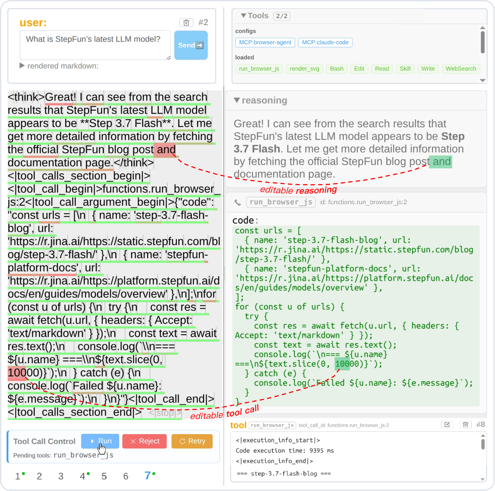
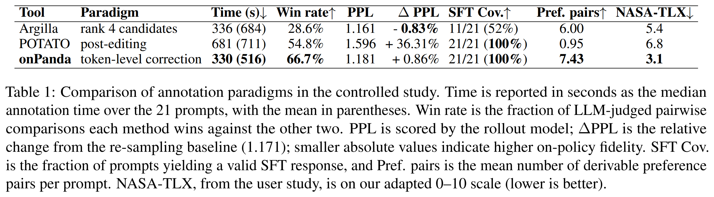

onPanda: Efficient Annotation of On-Policy Alignment Data for LLMs and Agents via Token-Level Correction
Lei Yang1 Mengyin Liu1,2 Jia Wang1 Hangyu Guo1 Liang Zhao1 Zheng Ge1
Kang an1 Binxing Jiao1 Qi Han1 Daxin Jiang1 Siqi Shen2 Xiangyu Zhang1
Paper 📄 | Demo 🎮 | Video ▶️ | Tweet 💬 | Dataset 📁 | Code 👨💻

TL;DR: An interactive tool that efficiently annotates on-policy alignment data for LLMs and agents via a token-level locate--correct--continue loop, automatically capturing fine-grained supervision.
Contributions of this paper:
- We propose onPanda, an annotation tool centered on token-level correction for efficiently annotating LLM alignment data and agent trajectories that stay close to the rollout model's distribution.
- We experimentally validate onPanda's annotation efficiency and the on-policy fidelity of the produced data, and demonstrate its support for multimodal and agent-trajectory annotation.
- We release the multimodal Panda-CVL dataset with an accompanying benchmark, providing public resources for research on token-level correction data.
Abstract
We present onPanda, an interactive tool for efficiently annotating LLM alignment data and agent trajectories. onPanda adopts token-level correction as its core interaction: while reading a model response, the annotator locates the first inappropriate token and either picks a substitute from the model's candidate tokens or types the correct text via free-form editing. The system then truncates everything after that position and continues generation from the corrected prefix, repeating this locate-correct-continue loop until a satisfactory response is obtained. This mechanism lets annotators precisely steer model outputs at low cost: a small controlled study suggests that onPanda reduces median annotation time by 52% over manual post-editing. Since the vast majority of tokens in the final response are generated by the model itself, the resulting data largely preserves the model's sampling distribution and is well suited for constructing on-policy SFT and preference data. Furthermore, the token-level corrections recorded during annotation provide fine-grained supervision with precise positions and naturally paired positive--negative samples. onPanda also connects to external tools and harnesses, enabling interactive trajectory annotation in realistic environments. In addition, we release Panda-CVL, a dataset annotated with onPanda, together with a benchmark for token-level correction.
Agent Trajectory Annotation


Annotating an agent trajectory with onPanda. Reasoning and tool-call arguments remain editable at token level. Corrected tool calls can be executed in the connected environment, and the resulting trajectory continues from the corrected context.
Try agent-annotate example in the live demo.
Comparison of Annotation Paradigms


Resources
- Paper (arXiv)
- Source code
- Python library
- Demo video
- Live demo
- Panda-CVL: Dataset and Benchmark for Token-Level Correction
- Panda-MultiRef-21: A Small Dataset for Studying the Distribution of Token-Level Corrections